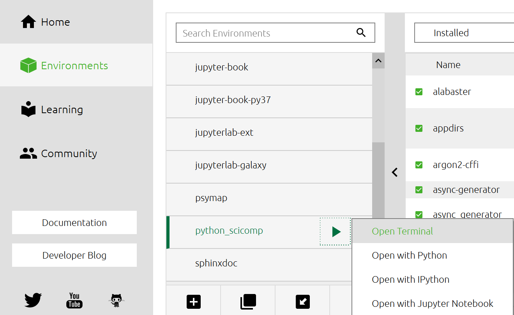

Software installation
Warning
This is being updated for the 2021 version of this course. Don’t follow these steps yet.
This page contains instructions for installing the required software on your computer. Please make sure before the course that you have all the required software installed or in any other way access to it.
For example, the workshop could be done with a remote Jupyter server, as long as you can use the terminal from the Jupyter (you need to be able to access the command line sometime).
Generic list of tools required
The actual installation instructions are below.
Python 3 (Anaconda is suggested, it will include everything)
including some major packages which you can find in the miniconda instructions below. Again, anaconda includes everything.
For certain lessons, the following is useful (if you don’t have, they can be taken as a demo):
Text editor (can also be done through Jupyterlab)
Command-line shell (can also be done through Jupyterlab)
git
Generic instructions with miniconda (advanced)
This is the advanced, minimal method. For most people, we recommend Anaconda (below). You will actually learn about miniconda during the workshop.
You can read how to install miniconda from the CodeRefinery installation instructions.
Then this environment file contains all packages needed, and can be installed with:
conda env create -f https://raw.githubusercontent.com/AaltoSciComp/python-for-scicomp/master/software/environment.yml
Python
We expect you to have a working Python installation with some common libraries. We recommend that you install the Anaconda python distribution. For more information on installing anaconda, you can see the CodeRefinery instructions.
Any other Python distribution which you can install libraries into would work, but because there are so many different ways to do this, we don’t support them.
Command line
There are different ways to start the command line.
From the Anaconda Navigator:
From the Anaconda Navigator, you can select “environments” on the left, then click on one, then the arrow, then “Open terminal”.
You can try from the Jupyter terminal.
Verify the installation
Watch the video
See this verification in video form - if you can do this, you are ready to go for day one.
You should be able to start JupyterLab. You can do this from the Anaconda Navigator (recommended if you have it), or from the command line like this:
$ jupyter lab
(... Jupyter starts in a web browser)
To verify command line usage:
$ python -V
Python 3.8.3
## Or python3...
$ python3 -V
Python 3.8.3
Any version of Python 3 through Anaconda should work for the course.
Text editor
For one portion of the course, you will need a text editor. If you don’t know what to use, you can use the text editor that comes from JupyterLab and it will do everything you need.
For other editors, see the CodeRefinery instructions. You don’t exactly need a terminal editor - the graphical ones, such as VSCode or whatever you use now, will work as well.
Command line
See above under “command line”.
TODO. You can see the CodeRefinery instructions for more advanced ways of doing things.
git
On the very last day, we use git. See the CodeRefinery instructions.
Verify:
$ git --version
git version 2.17.1
Zoom
If this is an online workshop, it might use zoom. You can see CodeRefinery instructions for it.